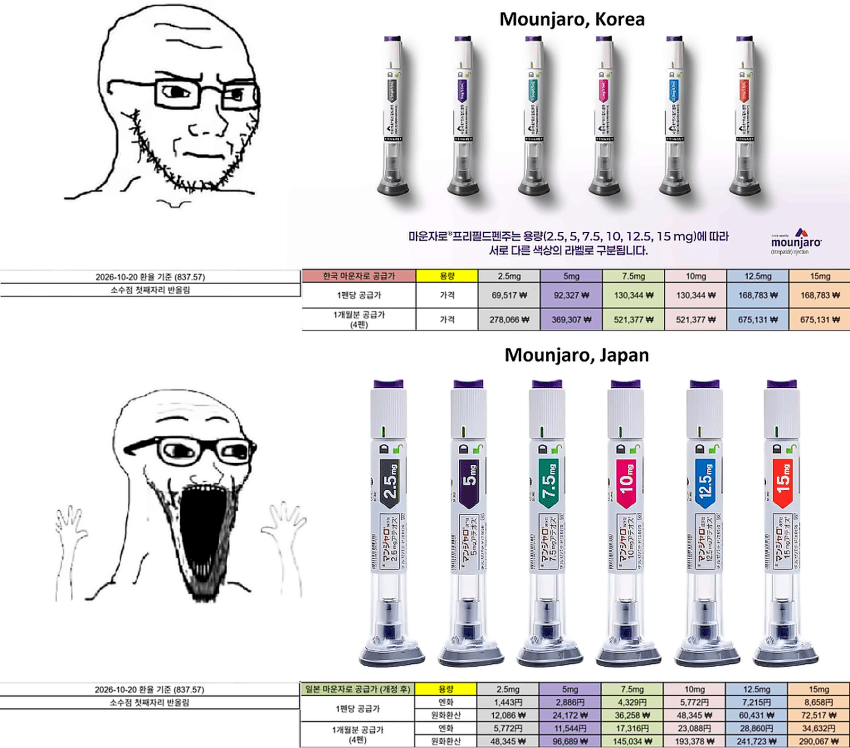
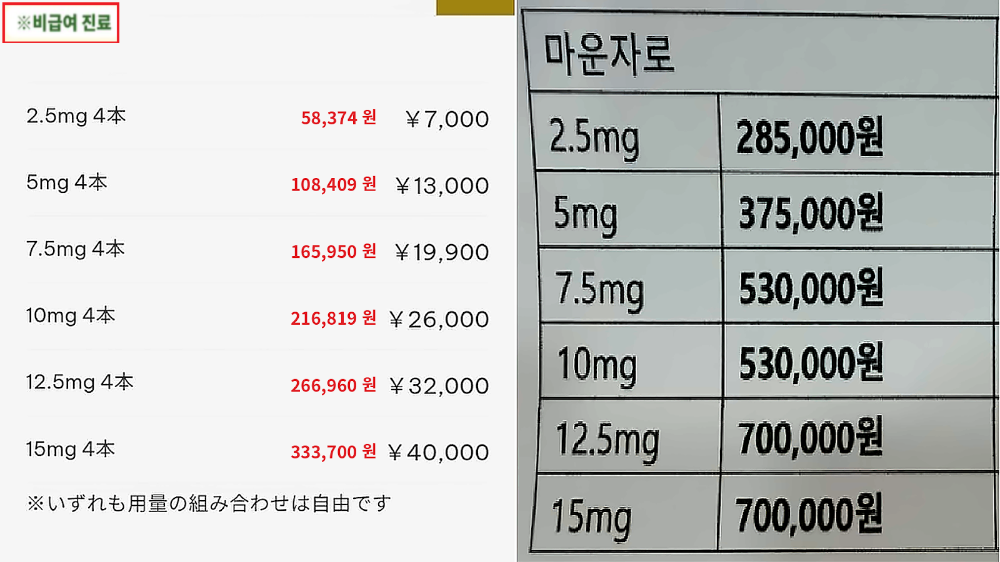
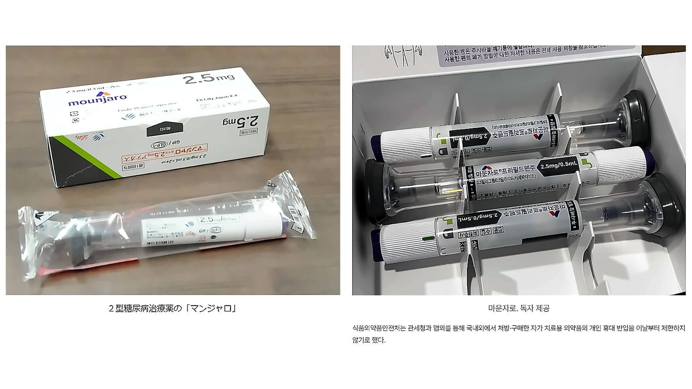

한국,일본의 마운자로는 제품 라벨 언어만 한국어냐 일본어냐의 차이인데
2.5 기준 한국 1/5 수준의 공급가

공급가에 기반한 한국보다 압도적으로 저렴한 성지 실처방가

한국과 다르게 펜마다 개별 멸균 비닐포장까지..
일본 마운자로 차원이 달라 <- 사실이었음...

한국,일본의 마운자로는 제품 라벨 언어만 한국어냐 일본어냐의 차이인데
2.5 기준 한국 1/5 수준의 공급가

공급가에 기반한 한국보다 압도적으로 저렴한 성지 실처방가

한국과 다르게 펜마다 개별 멸균 비닐포장까지..
일본 마운자로 차원이 달라 <- 사실이었음...
달라란에 오신걸 환영합니다~
이건 좀 차원이 다르네
ㅋㅋㅋ이거 막아보겠다고 개 지랄을 하더니 ㅋㅋ 이제 공항가깝거나 부산 경남사는사람들 하루만에 일본에서 딸깍 받아오면 에페는 뭐 먹고 사냐 ㅋㅋ 손가락 빨아먹으면 살좀 빠지겠네
대신 한미약품 주가가 애페 맞음 ㅋㅋㅋ
그럼 별로 타격도 없겠다
어쩐지 오전에는 2주석이였는데 지금은 1.5주석이네
에페 주주들은 다이어트 성공
스시자로
에페 멸망 ㅋㅋㅋㅋ
개좆민국 의료로비 뿌린 새끼들 컷ㅋㅋㅋㅋㅋㅋ
릴리야 많이 먹었다.. 이제 그만 가격 내리자
주주들은 신났어유
이제 비만이 가난의 상징이 되겠네
반대아님? 시바 한달 6마넌이면 배달 두세번아껴도나오네
아니 포장 저따구로 돼 있어?ㅋㅋㅋ
우리꺼는 확실이 저따구가 맞긴하지 음
한국 포장은 그냥 종이상자 안에 펜 4개가 끝임
뚜껑이 밀봉 되어있어서 바늘 부분은 안전하지만 펜 자체는 노출 되어있다 보니
일본처럼 개별포장 안해주냐고 불만 있는 사람들 꽤 많더라고
음 나도 다이어트용 말고 병때문에 계속 자가주사하는데 일반적인 펜도 저렇게 되있긴함
포장마저 다르네 ㅋㅋㅋㅋㅋㅋㅋㅋㅋㅋㅋㅋㅋ
역대급 엔저 포함
마라자로도 ㅈㄴ쌈 ㅋㅋㅋ
스시, 핵, 마운자로 레츠고
일본은 진짜 차원이 달라 ㄷㄷㄷㄷㄷ
ㄹㅇ 차원이 다르네
후쿠오카 가서 유지자로 맞고 오면 돈이 남겠네
스시자로 위험하다 어쩌구 저쩌구
개별밀봉까지 해줌
시발ㅋㅋㅋㅋ
12월에 가야하나
근데 가격이 차이가 나는 이유가 뭐임??
지금 엔화 박살난것도 ㅋㅋ
담백한 팩트
일본 마운자로 차원달라 진짜로 ㅋㅋㅋㅋㅋㅋ
일본가면 진짜로 한번 맞아봐야지
근데 나 돼지는 아닌데 저 가격이면 마운자로 한 번 맞아보고싶긴하네 대체 어떤 느낌일까 ㄷㄷ
돼지 아니면 맞을 이유가 없음. 몸에 좋은것도 아님.
구랭? 존나 무안단물처럼 말하니까 함 맞아보고싶었는데
흔히 알려진것만 해도 급성췌장염에 시력감퇴 심장관련질환... 당뇨로 서서히 뒤지는것보다는 나으니까 맞는거지 약이라는게 몸에 좋기만한건 없음.
개별포장해주는데 가격도 더 쌈ㅋㅋ 진짜 뭐임?
참고로 가격비교표의 왼쪽 일본 가격은 6개월치 일괄구매+병원방문 가격임
2-5개월치+온라인 진료(택배비 포함)는 1개월치당 1-2천엔 가격이 높음.
https://tokyosilkclinic.com/price/#manjaro
어제 뉴스 뜬 이후로 클리닉들 박터지게 경쟁붙어서 3개월분도 저 가격대인데 생김 ㅋㅋ
아까 X에서 올라온 포스팅 봤는데 좀 찾아보면 나올거임
클리닉들 경쟁 붙은것 때문에 아마 앞으로 3개월 분량도 공급가 근접하게 내려가지 않을까 싶음
ㅋㅋㅋㅋㅋ대박
이거 언제 가격 내려가냐
저거 급여랑 비급여도 나누긴해야됨 물론 비급여도해도 우리나라보다 쌈
저거보고 일본가서 사야지 해도 저가격에 못삼 ㅠㅠ..
일본가서 블랙마켓 이용한다해도 인도산 가짜 맞으면 골로가는거라 그런 도박은 추천하고싶지 않고
심지어 에페 ㅋㅋㅋ 약사에게 물어보니깐 아직 약국에 풀리지도 않더만
받으려면 큰병원 가야한대
진짜 차원이 다른ㅋㅋ
스시자로
마라자로
카레자로
어디가 제일 싸지
조만간 신문기사들 또 뜨겠네
[단독] 다이어트 주사 사러 일본까지… 외화유출 심화에 칼 빼든 OO계, 관련법 개정 나서
[경제] 일본의 사그러들지 않은 침략야욕, 이젠 당신의 지갑을 노린다
[사회] "여행가는 기분으로 마운자로 사러가요" 2030세대의 달라진 가치관.. 그들의 웃음 뒤에 국가는 울었다
[종합] "스시자로 게 섯거라" K-마운자로 에페, 공급가 파격 인하… 대반격 시작되나
[오피니언] 물산장려운동엔 과거-현재 구분없어… 범국민적 동참 필요
맘에드는거 하나 골라보셔
진짜 차원 다르네 ㅋㅋㅋㅋㅋ
일본 가는거 매국노 취급하겠네
엔저+한국보다 싼 가격 = 일본가서 스시 배터지게 먹고 사와도 돈남음
제약사가 로비를 얼마나 쳐했으면 저꼴이지 가격이 ㅋㅋ
진짜 차원이달라란